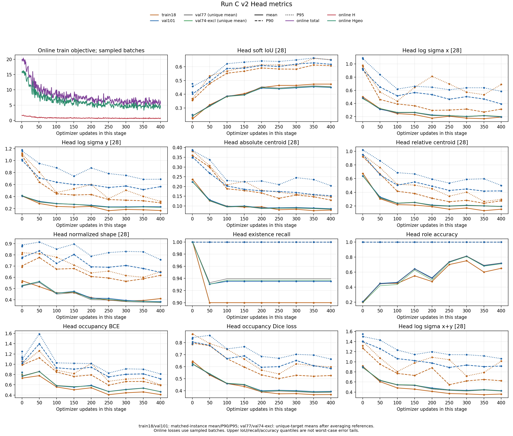
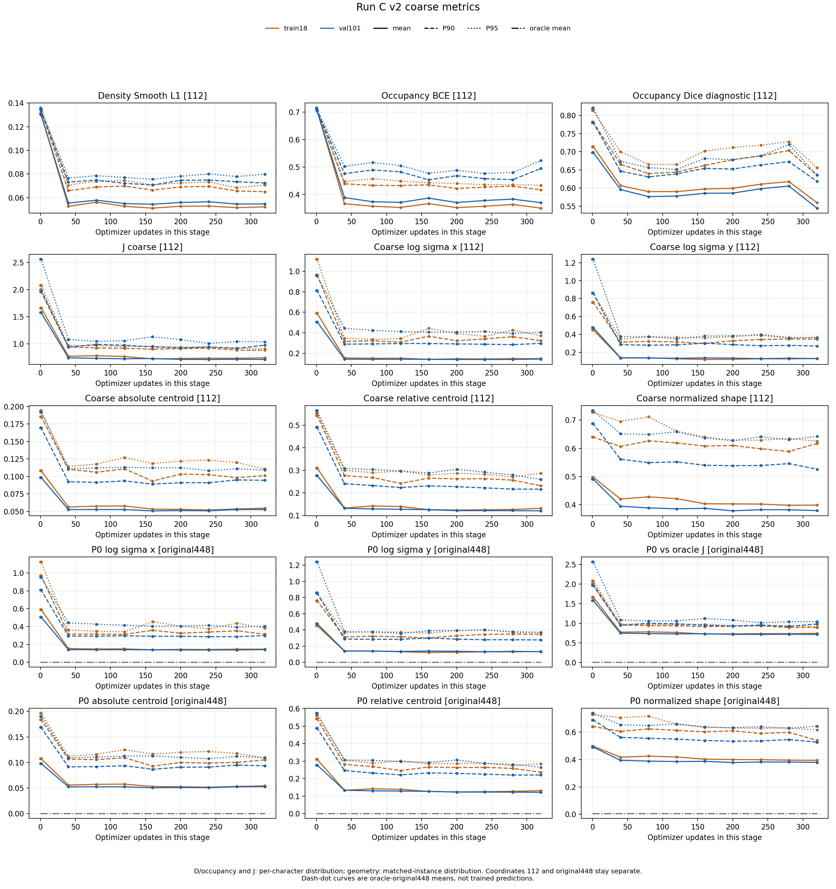

阶段一结构质量未通过技术审查，用户最终人工审阅pending；未启动BF正式长训。 IA0 4步 / IA1 400步 / IB 320步；旧run1因自身参考GT泄漏全部作废。此页只汇总clean run2。
尺度均值改善，但無的底部点画和复杂字内部留白仍丢失。S控制通路及阶段二接口正确性通过， 不能据此宣称结构质量、笔锋或独立泛化通过。


单seed0，固定验证已反复用于研究；74unique排除集不构成独立测试。原240固定文件保留， stage I只读其中原101JT；未重配参考。模型大文件和原始优化器日志留在服务器对应clean_run2目录。